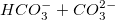
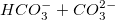
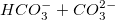

und  kombinierte Knoten.
und  kombinierte Knoten.Ein Stiff-Diagramm ist ein spezialisierter Diagrammtyp zum Anzeigen der hauptsächlichen Ionenzusammensetzung einer Wasserprobe.
Origins Stiff-Diagramm wird aus Arbeitsblattdaten mit mehreren Y-Spalten erstellt:
All diese Y-Spalten werden als ein Polygon mit 6 Knoten erstellt: für mehr als 6 Y-Spalten, sind und  kombinierte Knoten.
Sie dürfen auch weitere Spalten auswählen, die als zusätzliche Eingaben für Kationen oder Anionen behandelt werden können. Wenn es zusätzliche Ionen gibt, sollten Sie die Spaltenbeschriftungszeile auswählen, die die Konvertierungsfaktoren speichert.
Markieren Sie die Quelldaten und öffnen Sie den Dialog plotstiff durch eine der folgenden Methoden:
| Position | Legen Sie den XY-Bereich fest, um die Stiffs in einem Stiff-Diagramm zu positionieren. Diese Option wird nur gezeigt, wenn Sie im Hauptmenü Zeichnen > Spezialisiert: Stiff-Diagramm wählen. |
|---|---|
| Ionen | Legen Sie die Eingabe-Ionen fest: Na, K, Ca, Mg, Cl, HCO3, CO3, SO4. Sie müssen CO3 bzw. K und CO3 nicht festlegen. Die Einheit dieser Eingabewerte ist mg/L. |
| Zusätzliche Ionen | Legen Sie die zusätzlichen Ionen, einschließlich Kationen und Anionen, fest. Die Einheit dieser Werte ist mg/L. |
| Konvertierungsfaktoren |
Konvertierungsfaktoren sind gleich der Ionenladung geteilt durch Molekulargewicht. Die Einheit ist Meq/mg.
|
| Gruppe | Legen Sie eine Spaltenbeschriftungszeile als Gruppeninfo für die Ionen fest. Die Auswahl von Kein bedeutet, dass jedes Spalte ein Punkt ist. Wenn die Spalten A, B und F eine Gruppe sind - A und B sind Kationen, F ist ein Anion -, dann sind A+B ein Punkt in Kationen und F ist ein Punkt in Anionen, und sie befinden sich in der gleichen vertikalen Position. Wenn alle 8 Ionen zum Zeichnen ausgewählt sind und dieses Bedienelement auf Kein gesetzt ist, verwendet Origin die Standardgruppierungsinfos des Systems, das heißt, Na+K+Cl, Ca+HCO3+CO3 und Mg+SO4. |
| Sample-ID | Sie können eine Spalte auswählen, um die Sample-ID festzulegen und damit die Polygone zu beschriften. |
Stiff.otpu (installiert im Origin-Programmordner).
Wenn Sie mehrere Spalten ausgewählt und ein Stiff-Diagramm gezeichnet haben:
Um ein Stiff-Diagramm benutzerdefiniert anzupassen, können Sie den Dialog Details Zeichnung öffnen und zu den folgenden Registerkarten gehen: